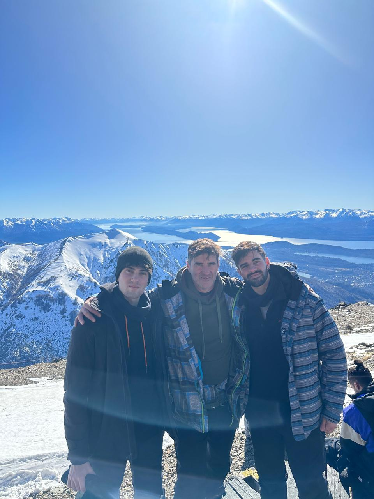
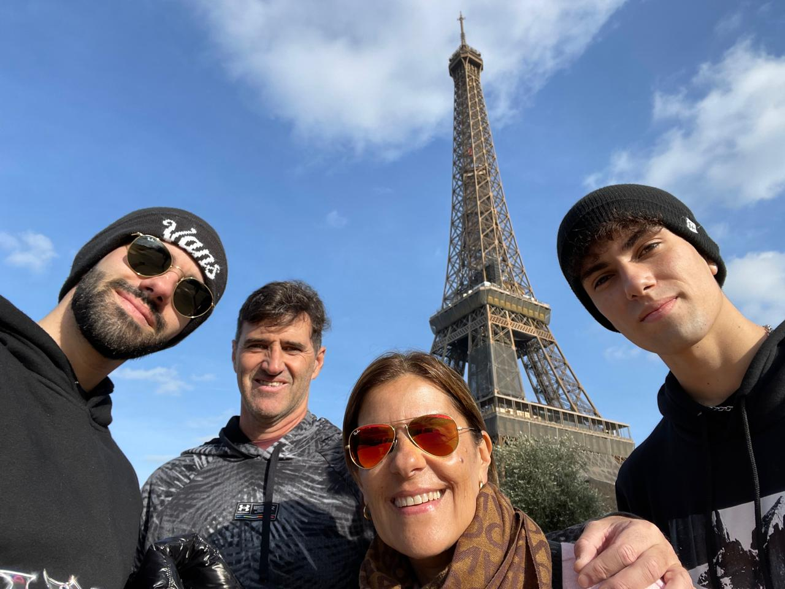

Mi viaje a Nueva York: luces, básquet y libertad

Viaje familiar recorriendo lo más importante de NEW YORK. Fue un viaje hecho en enero del 2025 previo al inicio de facultad.
Leer másBariloche en 3 días: pura nieve y snowboard
Realizamos snowboard en el cerro más importante de Bariloche. Viaje realizado a mediados del 2023 con mi hermano y mi papá.
Leer másEntre la Torre Eiffel y la Mona Lisa
Visita por primera vez a Francia, recorriendo sus principales lugares culturales. Fue realizado a fines del 2025.
Leer másHistoria, Arte y Deseos Cumplidos

Viaje al país de la pasta y pizza: Italia. Visitando lugares tradicionales como el Coliseo Romano. Este viaje lo hice en 2022.
Leer másMar del Plata: Risas, Recorridas y Fiesta

Viaje entre amigos a la costa argentina. Experimentando las fiestas, el calor y la movida del verano. Ocurrió en verano del 2024.
Leer más